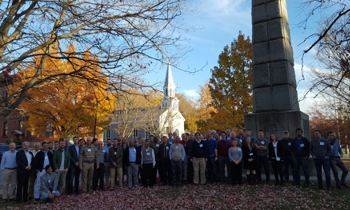
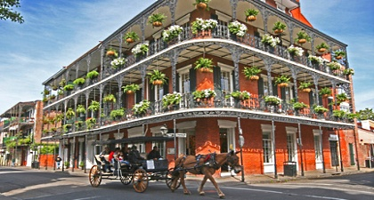

2016 Joint Annual Meeting Northeastern Mensurationists Organization (NEMO) / Southern Mensurationists (SOMENS)
Concord, MA, Nov 13-15, 2016
View Program

2015 Southern Mensurationists Annual Meeting and 4th International Conference on Forest Measurements and Quantitative Methods and Management
Blacksburg, VA, Oct 11-14, 2015
View Program
